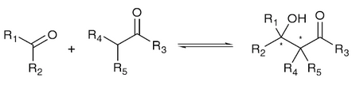

Aldolases
Carbon-Carbon bond formation is one of the most important reactions of organic synthetic chemistry. It is a strategic reaction in the synthetis of enantiopure molecules suchs as complex carbohydrates, sugar derivatives and analogues and othe polyhydroxylated products. Among carbon-carbon coupling methodologies, the aldo reaction is one of the simplest and most powerful strategies. In this reacton, steoreselective catalytic methods that enable a precise control over the stereochemistry of the newly formed stereogenic centter are of paramount importance and one of itr most important and challenging goals.
Aldolases are a specific group of lyases caralyzing the reversibe stereoselective addition of a donor compount (nucleophile) to an acceptor compound (electrophile). The scheme of the general reaction catalyzed by aldolases is:
It involves the attack by the deprotonated α-carbon atom of an aldheyde or ketone on the carbonyl atom of another aldheyde or ketone, resulting in a β-hydroxyaldheyde or a β-hydroxyketone.
Aldolases are usually classified according to their catalytic mechanism as:
Class I aldolases: Form a mechanistic point of view, class I aldolases form a Schiff base intermediate with the substrate at the active site.
Clas II aldolases: These enzymes use a divalent metal cofactor (Zn2+), acting as a Lewis acid in the active site. The catalysis proceeds via the formation of an enediolate intermidiate. These enzymes are often more stable than class I aldolases.